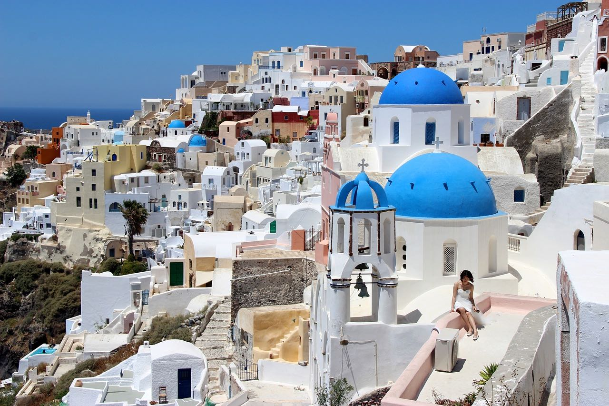
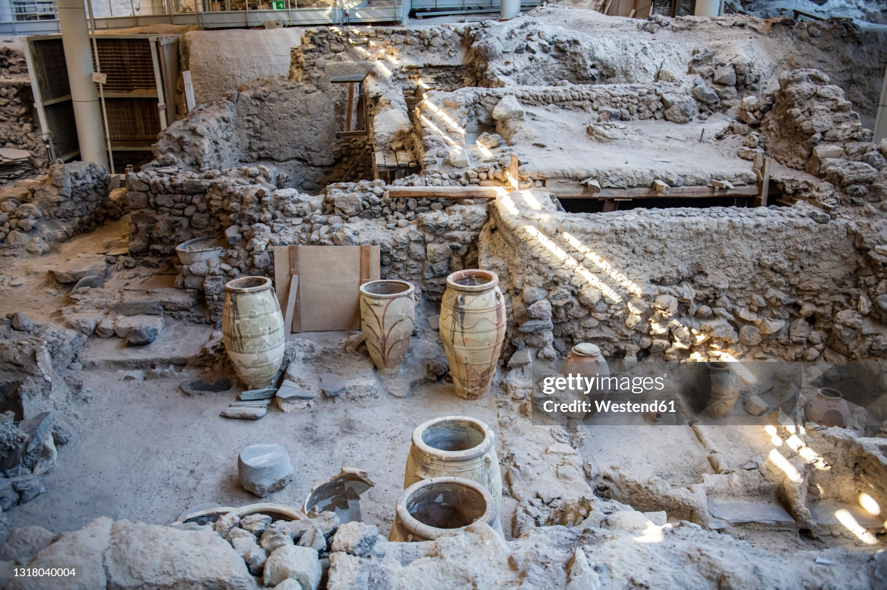
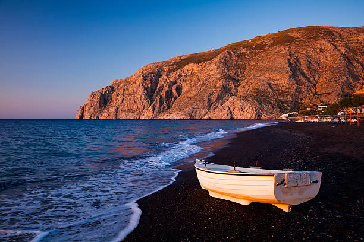

Santorini, una de las islas más hermosas de Grecia, es famosa por sus impresionantes atardeceres, sus edificaciones blancas con techos azules y sus paisajes únicos formados por la caldera volcánica.
Esta isla es un destino perfecto para los amantes de la naturaleza, la historia y la gastronomía.
Qué Visitar
Oia: Conocido por sus atardeceres espectaculares, Oia es un pueblo pintoresco con vistas panorámicas del mar Egeo.
No te pierdas la Plaza de la Fuente y la Iglesia de Agios Spiridon.

Akrotiri: Un sitio arqueológico que ofrece una visión fascinante de la civilización minoica. Es similar a la Pompeya griega y está bien conservado.

Kamari Beach: Una playa de arena negra famosa por su ambiente relajado y sus aguas cristalinas.

Fira: La capital de la isla, donde puedes encontrar tiendas, restaurantes y la impresionante Catedral de Agios Minas.
Red Beach: Conocido por su arena roja y sus formaciones volcánicas únicas, es un lugar perfecto para los amantes del senderismo.
El Orama Hotel & Spa en Santorini es muy bien valorado por los huéspedes. Tiene una calificación de 4.5 estrellas en Tripadvisor, basada en opiniones
de más de 120 visitantes. Los huéspedes destacan la limpieza del hotel, el excelente servicio y la buena relación calidad-precio. Además, el hotel
ofrece comodidades como una piscina al aire libre, un centro de fitness, y un jardín. Las habitaciones son cómodas y están equipadas con todas las
comodidades necesarias, incluyendo aire acondicionado, TV de pantalla plana y baño privado.
Este hotel boutique de lujo se encuentra en una ubicación remota en Imerovigli, ofreciendo vistas espectaculares del caldera. Los huéspedes destacan la
limpieza del hotel, el excelente servicio y la comodidad de las habitaciones. Cada habitación cuenta con un balcón privado, y muchas incluyen jacuzzis
interiores o exteriores. El hotel también cuenta con una piscina infinita y un spa completo.
Este hotel boutique de lujo se encuentra en Firostefani, ofreciendo vistas espectaculares del caldera. Los huéspedes destacan la limpieza del hotel, el
excelente servicio y la comodidad de las habitaciones. Cada habitación cuenta con un balcón privado, y muchas incluyen jacuzzis interiores o exteriores.
El hotel también cuenta con una piscina infinita y un spa completo.